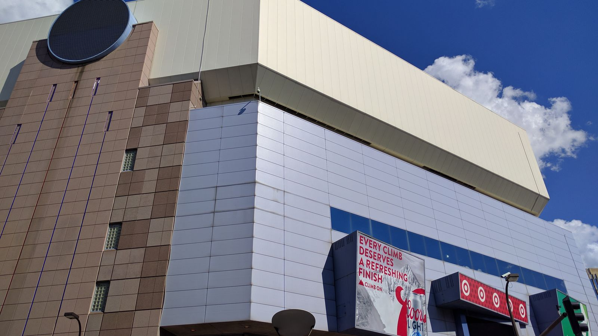

ティンバーウルブズ&リンクス、 支配株主が交代 —— マーク・スタッド氏がロア氏保有株の大半を取得、評価額45億ドル
NBAミネソタ・ティンバーウルブズとWNBAミネソタ・リンクスの共同オーナー、マーク・ロア氏が保有株式の大半をマーク・スタッド氏に売却し、スタッド氏が両球団の支配株主・筆頭株主になることで合意したと、ESPNが情報筋の話として日本時間8月21日に報じた。

評価額45億ドル、NBA史上4番目の規模
ESPNによれば、今回の取引は両球団を45億ドルと評価した上での売却だという。この評価額は、2025年に成立したボストン・セルティックスの61億ドルでの売却、そしてこの1年で2度成立したロサンゼルス・レイカーズの売却（それぞれ125億ドル・100億ドルの評価額）に次ぐ、NBA史上4番目の規模だとESPNは伝えている。
投資会社ドラゴニアー創業者、ロア氏は経営の一線から退く
スタッド氏は投資会社ドラゴニアー・インベストメント・グループの創業者・マネージングパートナーで、これまでロア氏・アレックス・ロドリゲス氏によるオーナー体制のもとで少数株主として両球団に出資していたとされる。ESPNによると、ロア氏は自身が創業したフードテック企業ワンダー・グループの新規株式公開(IPO)に注力するため、共同オーナー・共同会長の役割から一歩退く決断をしたという。ロア氏は今後も両球団への少数出資を継続する一方、ロドリゲス氏は保有比率を引き上げる意向だとされる。取引完了後の各人の正確な持ち株比率は、ESPNの報道時点では明らかになっていない。
承認待ち、現体制は維持
この契約はすでに署名済みだが、9月15〜16日に開催予定のNBA理事会での承認を待っている段階だとESPNは伝えている。承認後は、スタッド氏の妻でありUCSFの小児疼痛・緩和・統合医療センターの共同設立者でもあるエリサ・スタッド氏がティンバーウルブズのガバナーに就任する見通し。ロドリゲス氏はティンバーウルブズの副ガバナー、リンクスのガバナーとして引き続き球団運営に関わるという。ティンバーウルブズのティム・コネリー プレジデント、GMのマット・ロイド氏、ヘッドコーチのクリス・フィンチ氏、そしてリンクスのシェリル・リーブ ヘッドコーチ（兼バスケットボール運営部門プレジデント）ら現体制の主要メンバーは、今回のオーナー交代後も留任する見込みだとされる。
出典: ESPN「Sources: Stad completes deal for lead stake in Timberwolves, Lynx」
https://www.espn.com/nba/story/_/id/49681800/sources-stad-reaches-deal-controlling-stake-t-wolves-lynx